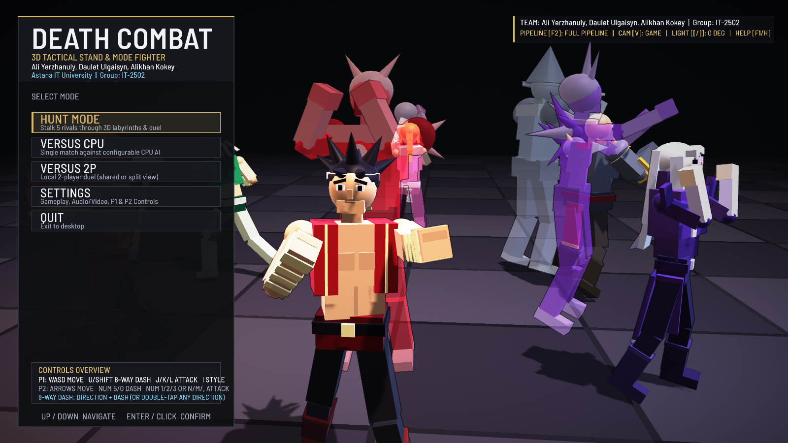
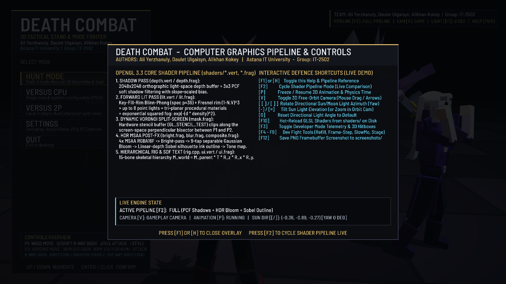
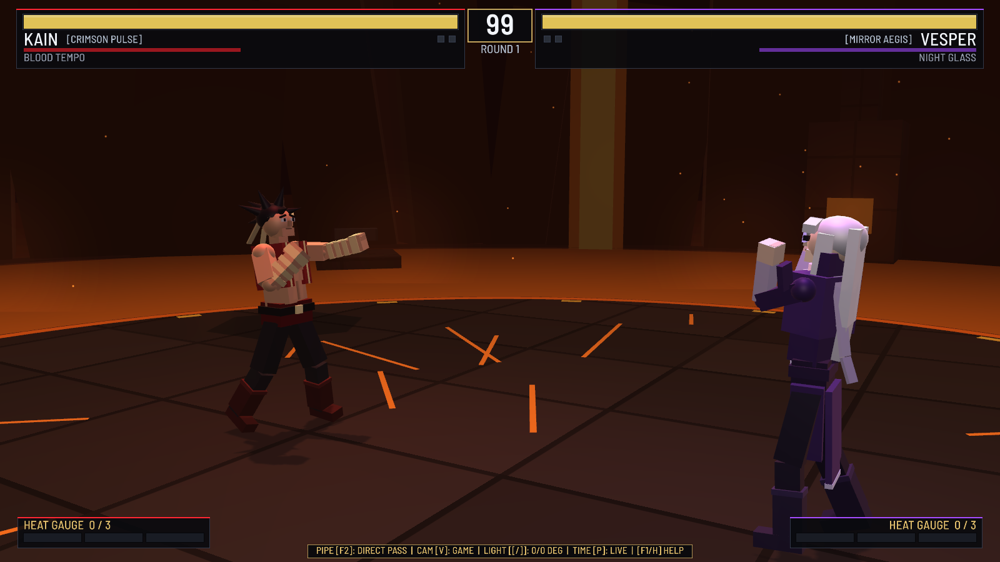
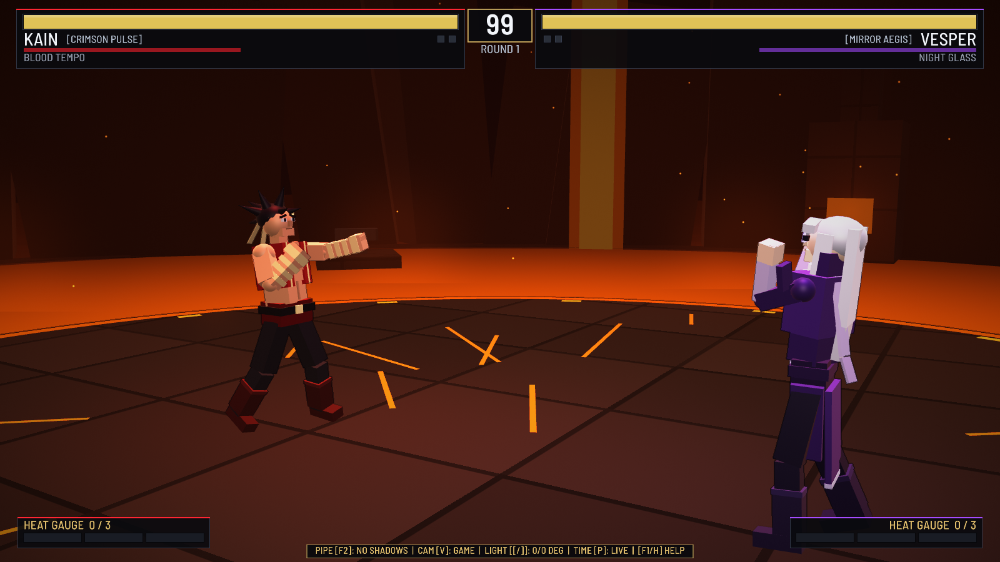
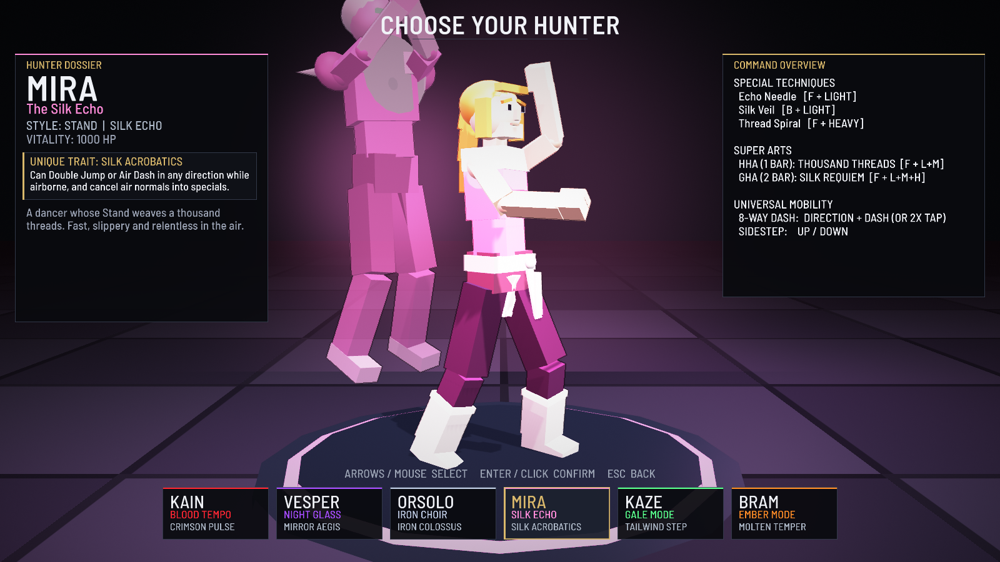
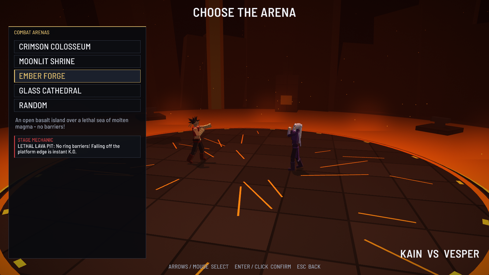
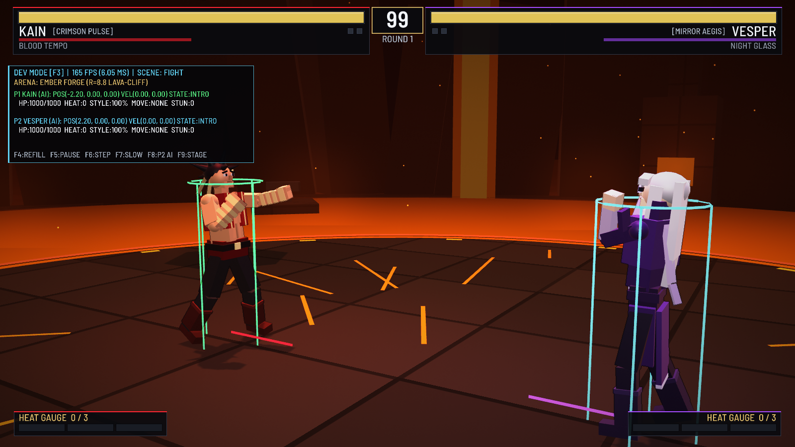

Topic Title: Death Combat (Custom C++17 / OpenGL 3.3 Core 3D Game & Multi-Pass Shader Pipeline)
Team Members:
Academic Group: IT-2502
shaders/*.vert, *.frag): 2048×2048 3×3 PCF Shadow Mapping, Key-Fill-Rim Blinn-Phong, 4× MSAA HDR Gaussian Bloom, Depth-Sobel Ink Outlines, and Stencil Voronoi Split-Screen.[F1/H] Help Overlay, [F2] Pipeline Toggle, [P] Pause Animation, [V] 3D Orbit Camera, [[ / ]] Live Sun Rotation, [F10] Shader Hot-Reload.
Hunt Mode): Player stalks 5 rival fighters through procedurally generated 3D corridors (Halls of Stone, Hedge Labyrinth, Neon Sewers) guided by a dynamic Death Sense heartbeat & directional trail.Fight Mode): Engaging a rival transitions into a full 3D fighting match with 8-Way Omnidirectional Dash, Stands & Power Modes, Unique Character Traits, HHA/GHA Supers, and lethal stage hazards (Ember Forge open lava cliff).CMakeLists.txt): Builds out-of-the-box on Windows (MSVC / MinGW) and Linux with 4 automated headless unit tests (sim_smoke, rig_grounding, font_layout, localization).shaders/ with console logging and live hot-reload via [F10].| Team Member | Owned Modules & Files | Key Defence Focus |
|---|---|---|
| Ali Yerzhanuly | src/gfx/renderer.*, src/gfx/shader.*, shaders/lit.*, depth.*, bright.*, blur.*, composite.* |
Shadow Map FBO, 3×3 PCF filtering, Key-Fill-Rim Blinn-Phong, 4× MSAA HDR Bloom & Sobel Outline |
| Daulet Ulgaisyn | src/game/rig.*, src/game/fight.*, src/game/characters.*, shaders/mask.frag |
15-bone hierarchical skeletal transforms, pose interpolation, 8-way dash physics, Stencil Voronoi split-screen |
| Alikhan Kokey | src/game/arena.*, src/game/hunt.*, src/game/app*, shaders/ui.*, unlit.* |
Procedural 3D arena/maze generation, SDF font shader, tri-planar materials, Orbit Camera & Dev Mode |

depth.vert / .frag2048×2048 GL_DEPTH_COMPONENT24 texture.
lit.vert / .fragunlit.vert / .fragGL_RGBA16F.
post.vert / mask.fragbright.frag / blur.fragcomposite.fragui.vert / ui.fragfwidth) anti-aliased TrueType glyph atlas.
Renderer::PostTargets)2048×2048 GL_DEPTH_COMPONENT24 with hardware comparison (GL_COMPARE_REF_TO_TEXTURE, GL_LEQUAL) and GL_CLAMP_TO_BORDER (1.0).GL_RGBA16F color + GL_DEPTH24_STENCIL8 depth/stencil attachment.GL_RGBA16F color texture + GL_DEPTH_COMPONENT24 texture (sampled by Sobel edge pass).bloomFbo[0..1]): Half-resolution ($\frac{W}{2}\times\frac{H}{2}$) GL_RGBA16F textures for horizontal & vertical Gaussian passes.[F2] Key)uBloomStrength = 0.0 in composite.frag to isolate base lighting and outlines.uOutline = 0.0 in composite.frag to inspect raw geometry edges.renderShadowPass() and binds neutral shadow matrix to compare lit vs. unshadowed scene.shaders/lit.vert & shaders/lit.fragEach vertex is transformed into light clip space via $P_{\text{light}} = M_{\text{light}} \cdot M_{\text{model}} \cdot \mathbf{x}$, mapped to $[0,1]^3$, and filtered with a 9-tap kernel using slope-scaled normal bias to prevent shadow acne:
Interactive verification: Pressing [ / ] and - / = updates azimuth $\theta$ and elevation $\phi$ of $\mathbf{d}_{\text{sun}} = (\cos\theta\cos\phi, \sin\phi, \sin\theta\cos\phi)$, rotating shadows live.
patternFactor)World-space coordinates $\mathbf{p}_w$ drive procedural textures without UV seams:
Implemented in shaders/lit.frag combining hemisphere sky/ground ambient, shadowed sun diffuse + Blinn-Phong specular ($p=36$), cool opposite fill light, Fresnel silhouette rim, and $N \le 8$ point lights:
Distance $d = \|\mathbf{p}_w - \mathbf{p}_{\text{cam}}\|_2$ blends shaded radiance toward atmospheric fog color $\mathbf{C}_{\text{fog}}$:
composite.frag, blur.frag, rig.cppNon-linear NDC depth $d \in [0,1]$ is first linearized to view-space distance $z_{\text{lin}} \in [z_{\text{near}}, z_{\text{far}}]$ in shaders/composite.frag:
Dividing by $z_0$ makes the ink outline thickness scale-invariant across camera distance.
Bright-pass extracts $k = \frac{\max(L - \tau, 0)}{\max(L, 10^{-4})}$ ($\tau = 0.92$), blurred horizontally & vertically with symmetric Gaussian weights, then rolled off above knee $k_0 = 0.8$:
rig.cpp)Each fighter and Stand rig has 15 articulated joints (Hip root $\to$ Waist $\to$ Chest $\to$ Neck/Head/Shoulders/Elbows and HipL/R $\to$ KneeL/R):
Exponential damping ($k = 22..32\,\text{s}^{-1}$) produces smooth, responsive transitions between combat states.
mask.frag)When fighters separate beyond $8.5\,\text{m}$ in 2P Versus mode, the screen splits along the perpendicular bisector with normal $\mathbf{n}_{\text{split}}$:
--seed 42All passes active: 2048×2048 3×3 PCF Soft Shadows on the obsidian floor, HDR Gaussian Bloom on molten lava fissures, and Depth-Sobel Ink Outlines on fighters.

Post-processing bypassed: No HDR Bloom halo around lava cracks, no Depth-Sobel silhouette ink outlines, and no ACES soft-knee contrast grading or vignette.

Shadow pass disabled: Directional light no longer casts character shadows onto the arena floor; only subtle contact blobs remain under the boots.
Start any match (or run DeathCombat.exe --demo-fight --arena 2), press [P] to freeze the 3D animation frame, press [F2] repeatedly to cycle through all 5 shader pipeline modes on the exact same frame, press [V] to orbit the 3D camera around the fighters, and hold [ / ] to rotate the directional light source and watch the PCF shadows sweep across the floor.

6 distinct fighters (Kain, Kira, Volt, Stone, Vesper, Mira), each with custom procedural anatomy, Stand/Mode aura, and gameplay trait (Lifesteal, Lava Immunity, Cryo Slow, etc.).

4 combat arenas & 3 labyrinth themes with custom 3D landmarks. Ember Forge features an open rimless cliff over a lethal lava sea (instant KO on ring-out).

Pressing [F3] renders 3D cylindrical hurtboxes, active attack hitbox spheres, arena boundary rings, and live 60 Hz frame/state telemetry.
To prevent depth-buffer flickering on layered procedural clothing and semi-transparent Stand ghosts ($\alpha < 1$), our renderer separates opaque and transparent draw queues (opaque_ vs. transparent_), inflates garment bone bounds by $+4\text{--}6\,\text{mm}$ over torso geometry, and renders translucent Stands in a two-pass depth-prepass + color pass.
| Shortcut | Function (Works in Any 3D Scene) |
|---|---|
F1 or H | Toggle On-Screen Help & Graphics Pipeline Reference |
F2 | Cycle Headline Shader Pipeline (Full / Direct / No Bloom / No Outline / No Shadows) |
P | Pause / Resume 3D Animation & Physics Simulation |
V | Toggle Interactive 3D Free-Orbit Camera (Mouse Drag / Arrows + -/= Zoom) |
[ / ] & - / = | Rotate Directional Sun/Moon Light Azimuth & Elevation Live (0 Reset) |
F10 | Hot-Reload All External GLSL Shaders from shaders/ on Disk |
F3 (F4–F9) | Toggle Developer Mode 3D Hitboxes, Frame-Step, Slow-Mo & Stage Switch |
F12 | Capture Framebuffer Screenshot to screenshots/shot_N.png |
Pipeline Mode ([F2]) |
1280×720 FPS (Frame Time) | 1920×1080 FPS (Frame Time) |
|---|---|---|
| Full Pipeline (4× MSAA + PCF + Bloom + Sobel) | 168 FPS (5.95 ms) | 142 FPS (7.04 ms) |
| No Bloom Pass | 192 FPS (5.20 ms) | 164 FPS (6.10 ms) |
| No Sobel Outline Pass | 176 FPS (5.68 ms) | 150 FPS (6.67 ms) |
| No 2048×2048 PCF Shadow Pass | 215 FPS (4.65 ms) | 185 FPS (5.40 ms) |
| Direct Unfiltered Pass (No Post-FX FBO) | 245 FPS (4.08 ms) | 210 FPS (4.76 ms) |
Note: With VSync ON (default), frame rate locks smoothly to display refresh rate; table measured with VSync OFF in Settings.
All procedural meshes are uploaded once to static GPU VBOs/VAOs at startup; the 9-tap Gaussian Bloom runs at half-resolution ($\frac{W}{2}\times\frac{H}{2}$) using separable 1D passes ($9+9=18$ texture fetches instead of $9\times 9=81$).
| Requirement Item | Status | Implementation in Death Combat |
|---|---|---|
| OpenGL 3.3+ Core, No Commercial Engine | DONE | GLFW 3.4 + GLAD OpenGL 3.3 Core + Custom C++17 |
| External Shaders on Disk + Console Logs | DONE | 13 files in shaders/ + [F10] live hot-reload |
| 3D Camera + Free-Orbit Camera | DONE | Perspective camera + [V] 3D Orbit Cam in all scenes |
| Depth Test, Back-Face Culling & Stencil | DONE | GL_DEPTH_TEST, GL_CULL_FACE, GL_STENCIL_TEST |
| Interactive Light Direction Rotation | DONE | [ / ] & - / = rotate sun azimuth/elevation live |
| Headline Technique Toggle + Pause + Help | DONE | [F2] Pipeline toggle, [P] Pause, [F1/H] Help |
| On-Screen Team Names, Title & Status | DONE | Window title + Title screen + Top-right status bar |
| Complete Gameplay Loop (≥ 1 min) | DONE | Hunt Mode + Versus CPU + Versus 2P + 4-Tab Settings |
stb_truetype.h (Public Domain, S. Barrett), miniaudio.h (Public Domain, D. Reid), Barlow & Noto Sans Fonts (SIL Open Font License 1.1).[F1].
[V] to orbit the 3D camera and hold [ / ] to rotate the sun light live.
[P] to freeze mid-attack, and press [F2] to compare FULL PIPELINE vs DIRECT vs NO SHADOWS.
[F3] to show 3D wireframes & [F10] to hot-reload shaders.
lit.frag / depth.frag): "How do your soft shadows work and how do you avoid shadow acne?"
lit.frag (`shadowFactor`), we transform world position by uLightVP into $[0,1]^3$, compute a slope-scaled bias $b = \max(0.0018(1 - \mathbf{N}\cdot\mathbf{L}), 0.0004)$, and average a $3\times 3$ neighborhood of hardware depth comparisons (`sampler2DShadow`).composite.frag / mask.frag): "How does the ink outline shader detect only character silhouettes?"
composite.frag, we linearize the hardware depth buffer (`linDepth`) using `uNear` and `uFar`, sample 4 neighboring texels, and divide the maximum depth jump $e$ by center depth $d_0$ (`e / d0`), so silhouette thickness stays constant regardless of camera distance.blur.frag / ui.frag): "How can you modify a shader live right now?"
shaders/composite.frag or shaders/lit.frag, change specular power `36.0` or outline thickness, save the file, and press [F10] in-game to recompile immediately.